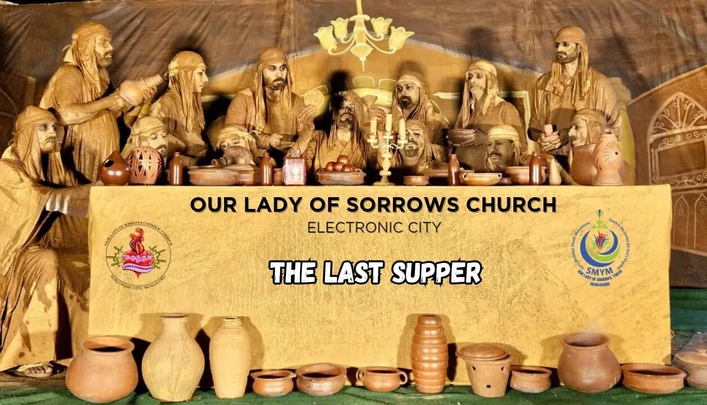
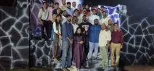
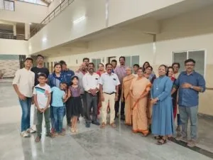

This Headline Grabs Visitors' Attention
A short synopsis of Our Lady of Sorrows parish, Electronics City, Bangalore — a Syro-Malabar Catholic community celebrating its Jubilee Year of grace, renewal, and thanksgiving.
Parish Church
Monday – Saturday
Sundays
For where two or three gather in my name, there am I with them.
Celebrating the Jubilee Year
Our Lady of Sorrows (OLS) Parish Church in Hebbagodi began in 2001 with Syro-Malabar liturgical services led by the MSFS Fathers to serve the growing Christian community in the Electronic City area.
We are blessed to be in the Jubilee Year, a special time of grace, renewal, and thanksgiving in our Church. The jubilee period, spanning from 2001 to 2026, marks a significant milestone in our journey of faith.
Our humble beginnings…
Find your way into the life of the parish — from council and wards, to religious institutions, to the vicar's message.
Parish Council
Explore the list of Parish Council members and the wards or committees they represent.
OpenWards in Parish
Explore the list of Wards and respective Council members.
OpenReligious Institutions
Explore the list of Religious Institutions in Ecity (CRI)
OpenParish Priests Message
Explore Parish Priests Message
OpenParish
Announcements
Together in Faith, Building Our Future
Each one must give as he has decided in his heart, not reluctantly or under compulsion, for God loves a cheerful giver.— 2 Corinthians 9:7
Dear Parishioners,
We kindly request those who have committed to supporting the church construction to please complete the pending payments as promised. Your continued support is invaluable in helping us move forward with the construction work and ensure its timely completion.
We also request members who have not yet submitted their coupons to kindly complete and submit them at the earliest. Additionally, bookings for the parish hall are currently available at a discounted rate as part of our fundraising efforts to support the ongoing construction and pending debts.
Those who wish to extend further support may also consider sponsoring the altar, doors, windows, or any other materials required for the church, as per your choice and willingness.
Thank you for your generosity, cooperation, and continued prayers. May God bless you and your families.
Warm regards,
Fr. Riju Vazhaparambil MSFS
Vicar, OLS Parish
Donate to the Parish
We invite you to support the parish by making a donation towards the construction of the church and the regular maintenance of parish activities. Your generous contribution will be utilized for the ongoing needs of the community.
Donate now
Catechism
Department
◆
The catechetical heritage of the Syro-Malabar Church is as ancient as the Church itself. Like other Christian traditions, the St. Thomas Christians also nurtured a system of catechesis through which they passed on the faith across generations.
Sunday School
◆Nurturing young hearts in faith and values through age-appropriate catechesis and spiritual formation.
OPEN →Cherupushpa
Mission League
◆
Empowering children to grow in faith and service through prayer, learning, and acts of love.
OPEN →Holy Childhood
Association
◆
Inspiring children to embrace their baptismal call and become witnesses of Christ's love.
OPEN →Samaritans Of Mandya Mobile App
The Diocese of Mandya has launched the Samaritans of Mandya (SoM) app to coordinate Good Samaritan Ministry activities and provide quick emergency assistance to all diocesan members. Through the app, members can access emergency support, connect with fellow parishioners, and participate in the diocese's charitable outreach efforts.
Awards and Recognitions
.webp)
Circulars, Pastoral letters & Bulletins
Circulars
Stay updated with the latest circulars and official communications from the Syro-Malabar Church.
Press Releases
Stay informed with the latest official press releases from the Syro-Malabar Church.
Pastoral Letters
Read and reflect on the pastoral letters published, offering spiritual guidance and direction from the Major Archbishop and the Synod of Bishops.
Diocesan Bulletins
Stay updated with the Diocesan Bulletins published by the Syro-Malabar Church and Diocese
Read NSRV Bible online or Download the APP
BibleOn App is a free Catholic Bible application designed to deepen your spiritual journey. It provides access to the Holy Bible in text and audio, with multilingual support and popular Catholic editions.
THE DAILY BIBLE READINGS AND PRAYERS FOR ALL OCCASIONS
Our Saints & Blesseds in Syro Malabar Church
A quick glance throught our ministries…

Pithruvedi
View the list of members within our parish community and connect with them for your various needs and services.
Open →Mathruvedi
View the list of members within our parish community and connect with them for your various needs and services.
Open →Youth Ministry
View the list of members within our parish community and connect with them for your various needs and services.
Open →
Laity Commission
View the list of members within our parish community and connect with them for your various needs and services.
Open →
Vincent De Paul
View the list of members within our parish community and connect with them for your various needs and services.
Open →Construction Committee
View the list of members within our parish community and connect with them for your various needs and services.
Open →Connect with us on Social Media
Please log in to the parish's official social media accounts using the designated credentials to access and explore additional details. The social media handles provide updated information regarding parish activities, events, and announcements.